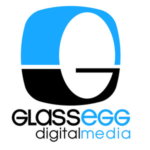

2017 Glass Egg Degital Media Ltd.
ビジネスソリューションコーナー http://www.glassegg.com/ja/
グラスエッグ社はベトナムのホーチミン市にある3Dスタジオです。1999年創業以来、世界各国のスタジオの3D制作に関わり、『Titanfall2』、『Call of Duty: Black OPS III』など多数のAAAタイトルを手掛けてきました。200名以上の3Dモデラーにより、車両や背景、キャラクターのほか、モデル、テクスチャからキャラクターアニメーションまで、さまざまな案件に対処いたします。ビジネスソリューションズエリアに出展しております。ぜひお立ち寄りください！